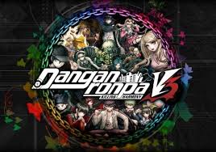

- Danganronpa: Trigger Happy Havoc
- Danganronpa 2: Goodbye Despair
- Danganronpa Another Episode: Ultra Despair Girls
- Danganronpa V3 Killing Harmony

Danganronpa V3: Killing Harmony is a visual novel adventure game developed
by Spike Chunsoft for the PlayStation 4, PlayStation Vita and Windows.
The game was released in Japan in January 2017, and in North America and Europe
by NIS America that September.A Windows version was also released at the same time.